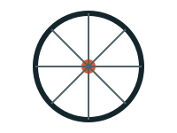
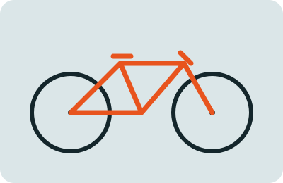
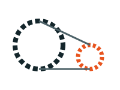
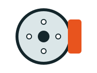

Ремонт колёс
Центровка, замена спиц и камер, обслуживание втулок.
Ремонт, настройка и сборка велосипедов любой сложности. Диагностика бесплатно, работа за один день.
Записаться на ремонт
«Спица» работает с 2015 года и находится в центре города. В мастерской трудятся четыре механика с опытом более восьми лет. Мы чиним городские, горные и шоссейные велосипеды. Используем оригинальные запчасти и даём гарантию три месяца. Нам важно, чтобы вы уехали из мастерской с работающим и безопасным велосипедом.

Центровка, замена спиц и камер, обслуживание втулок.

Регулировка переключателей, замена цепи и кассеты.

Замена колодок, прокачка гидравлики, регулировка.
Простой ремонт занимает до двух часов, сложный — до одного дня.
Запись не обязательна, но по ней мы принимаем без очереди.
Адрес: г. Пример, ул. Учебная, д. 1
Телефон: +7 (000) 000-00-00
Почта: info@example.com
Работаем ежедневно с 10:00 до 20:00
Контактные данные вымышленные, сайт сделан в учебных целях.